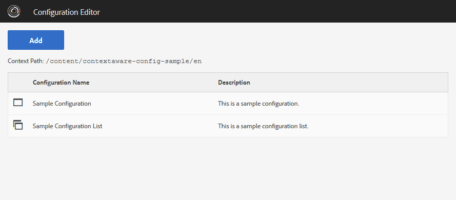
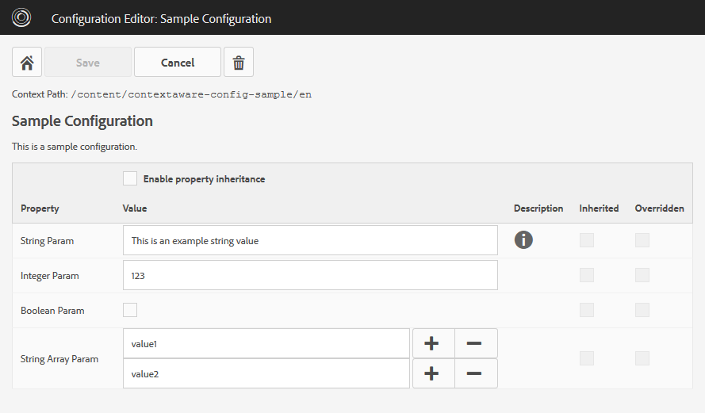
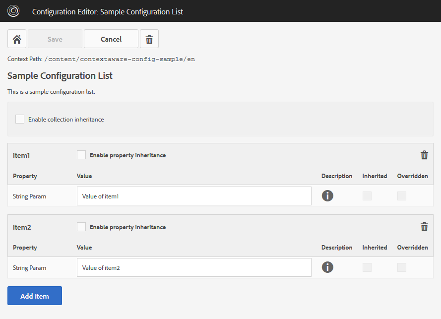

wcm.io
wcm.ioConfiguration Editor usage
Basic concepts
The Configuration Editor is a template which is used inside the ‘/content’ tree. It allows to edit configurations for the inner-most context that is detected within the context tree (e.g. by defining sling:configRef properties). Where the configuration itself is stored depends on your system settings, by default it's stored in /conf.
You cannot define the contexts via the configuration editor, you have to set the sling:configRef manually or within the page properties of your content templates, or by defining custom context path strategies. But once your contexts are defined you can create a config editor page within each context and edit the configuration parameters.
The configuration editor supports only editing configuration for which configuration metadata is present. This is normally done by deploying configuration annotation classes with your applications.
See Apache Sling Context-Aware Configuration documentation for more details.
Installation
In most cases you will deploy the configuration editor bundle io.wcm.caconfig.editor together with your application. In this case you should define your own template definition for it which controls where editor config pages can created (see next section).
Alternatively you can deploy it using an AEM package which contains the config editor bundle together with a template definition which allows all paths below /content.
| wcm.io Context-Aware Configuration Editor Bundle (JAR) | |
| wcm.io Context-Aware Configuration Editor AEM Package with Template Definition (ZIP) |
When you are using AEM 6.1 or 6.2 you have to additionally deploy the Apache Sling Context-Aware Configuration bundles (API, SPI, Impl) to AEM. In AEM 6.3 you have to update the Apache Sling Context-Aware Configuration SPI and Impl version to the latest version if you want to use Editor version 1.1 and upwards. See Deploy and configure Context-Aware Configuration in AEM for details.
In most cases the default persistence implementation provided by Apache Sling or AEM 6.3/6.4 is not enough for the needs of AEM applications. wcm.io Context-Aware Configuration Extensions provide additional implementations and features.
Defining the editor template
The editor application contains an AEM template definition, but it is deactivated by default. Each application has to define it's own editor template with a fitting allowedPaths definition and title depending on the needs of the application.
Only the template has to be defined, the page component resource type can be referenced. Example:
{
"jcr:primaryType": "cq:Template",
"jcr:title": "Configuration Editor",
"allowedPaths": "^/content(/.*)?$",
"jcr:content": {
"jcr:primaryType": "cq:PageContent",
"sling:resourceType": "/apps/wcm-io/caconfig/editor/components/page/editor"
}
}
Editor GUI

When opening the Configuration Editor an overview of all configurations is displayed for which some configuration data is present. By using the “Add” button you can enter new configuration data for other configurations where no data exists yet.

For a singleton configuration all configuration parameters are displayed and can be changed. With the “Save” button the changes are persisted, the “Delete” button removes the whole configuration.

For a configuration collection all existing collection items are displayed, and new ones can be added after entering a name. Single items or the whole configuration collection can be removed.
The editor is based on AngularJS and CoralUI.
Publish configurations
By default, Context-Aware configurations are stored below /conf and can thus not published by editors using the AEM Author GUI. The Editor provides an “publish this page” button, which published the editor page itself.
It is recommended to also deploy the wcm.io Context-Aware Configuration Extensions and activate the AEM Page persistence strategy. Then the reference provider also included in the extensions bundles detects changed and unpublished configuration pages below /conf when publishing the editor page, and allows to publish the configurations as well.
Using custom edit widgets
For each data type (string, number, boolean) the fitting edit widget is chosen automatically. Alternatively you can define custom widgets via extra properties on the @Property annotation.
pathbrowser
Define a path browser widget for a string parameter with fixed path:
@Property(label = "DAM Path", description = "Browse DAM assets.", property = {
"widgetType=pathbrowser",
"pathbrowserRootPath=/content/dam"
})
String damPath();
Define a path browser widget for a string parameter with the current configuration context path as root path:
@Property(label = "Context Path", description = "Browse pages in the current site.", property = {
"widgetType=pathbrowser",
"pathbrowserRootPathContext=true"
})
String contextPath();
dropdown
Define a dropdown list of options to choose from. The description is displayed to the user, the value of the chosen option is stored in the configuration.
@Property(label = "Dropdown Param", description = "Parameter with dropdown list.", property = {
"widgetType=dropdown",
"dropdownOptions=["
+ "{'value':'option1','description':'First option'},"
+ "{'value':'option2','description':'Second option'},"
+ "{'value':'option3','description':'Third option'}"
+ "]"
})
String dropdownParam();
If you annotate an array parameter multiple options can be selected.
Alternatively, it is possible to provide a dynamic list of dropdown options by pointing to an OSGi service implementation of the DropdownOptionsProvider interface which has a property DropdownOptionsProvider.PROPERTY_SELECTOR set to a name matching the name set in the property configuration:
@Property(label = "Dropdown Dynamic Param", description = "Parameter with dynamic dropdown list.", property = {
"widgetType=dropdown",
"dropdownOptionsProvider=myproject.provider1"
})
String dropdownDynamicParam();
textarea
Allows to enter multiple lines of text for a string parameter.
@Property(label = "String Text Area", description = "Enter multiple lines of text.", property = {
"widgetType=textarea"
})
String stringTextArea();
Filter configurations
On a system that hosts multiple tenants or websites it may be desirable to offer only a subset of context-aware configurations that are present in the system. This is possible by adding a Context-Aware Service that implements the interface ConfigurationEditorFilter.
Example:
@Component(service = ConfigurationEditorFilter.class)
public class ConfigurationEditorFilterImpl implements ConfigurationEditorFilter {
@Override
public boolean allowAdd(@NotNull String configName) {
return !StringUtils.startsWith(configName, "unwantedConfigName");
}
}
The control which context-aware configurations are available on which content subtree in the system set the appropriate service properties or bundle header names as described in Context-Aware Services.
Disable Editor on Publish
You should disable the configuration editor on publish by applying an OSGi configuration like this:
[configurations runModes=publish]
# Disable Configuration Editor on publish
io.wcm.caconfig.editor.impl.EditorConfig
enabled=B"false"